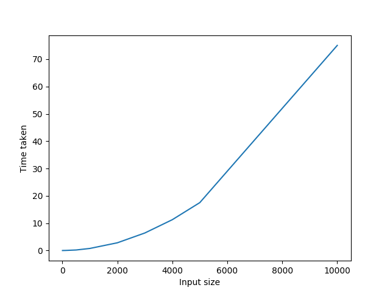

Polygon Triangulation
1.0
Implementation of polygon triangulation
Examples
The algorithm theoretically runs in
O(
nlogn
)
time.
Experiments seem to conform with the same to a great extent.
We encountered floating point errors for very small values.
Issues were encountered while checking whether a diagonal lies inside a polygon.
Input Size
Time Taken (sec)
5
0.016
10
0.016
50
0.031
100
0.039
500
0.210
1000
0.774
2000
2.838
3000
6.425
4000
11.293
5000
17.538
10000
75.04

Generated by
1.8.13
 1.8.13
1.8.13